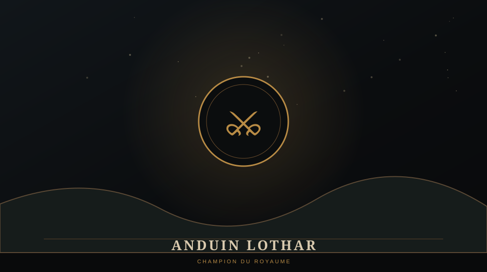

ANDUIN LOTHAR

⚔️ QUI EST ANDUIN LOTHAR ?
Anduin Lothar est l'un des plus grands guerriers du royaume d'Azeroth et un proche du roi Llane Wrynn. Il représente la dimension militaire de la résistance humaine face à la Horde.
Dans les récits ultérieurs, son importance dépassera largement la seule Première Guerre.
⛏️ LES DEADMINES
Pendant la campagne humaine de Warcraft I, Lothar conduit une expédition dans les Deadmines afin de retrouver le Tome of Divinity. L'expédition tourne mal et ses hommes se retrouvent pris au piège.
La quatrième mission humaine envoie le joueur dans les mines pour retrouver Lothar et les survivants.
🛡️ UN PERSONNAGE CHARNIÈRE
Lothar relie directement Warcraft I à Warcraft II. Là où Llane incarne le royaume d'Azeroth, Lothar deviendra le symbole de la résistance humaine au-delà de la chute de Stormwind.
⚠️ LORE ULTÉRIEUR / SPOILERS
Après la chute de Stormwind, Lothar mène les survivants vers le nord et joue un rôle central dans la formation de l'Alliance de Lordaeron. Il devient ainsi l'une des figures majeures de Warcraft II.
Son nom restera gravé dans l'histoire d'Azeroth jusque dans World of Warcraft, notamment à travers l'héritage des Sons of Lothar.